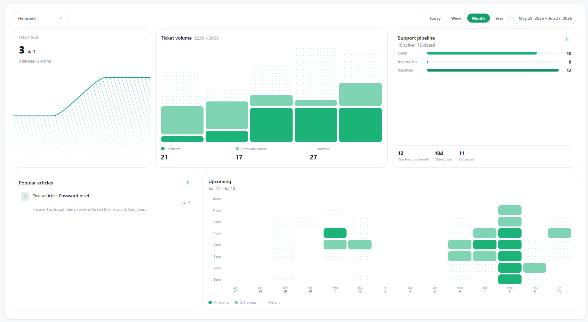

Resolve tickets faster with AI and full endpoint context.
AI ticketing, endpoint visibility, and secure automation in one platform, so your team resolves issues faster and cuts the time and cost of everyday IT support.
- Easy Windows agent rollout
- AI-guided troubleshooting
- Live fleet visibility
- Built for SMB IT teams


A ticket's journey through Nevian
From a single chat message to a resolved ticket in minutes.
Built to remove the delays from everyday IT support
Every ticket lands with context, so support moves without waiting.
Tickets classified in seconds
Category, priority, and next step decided by AI before a technician opens the ticket.
Real-time fleet status
See which machines are online, offline, or stale, the moment the ticket lands.
Every device detail already attached
Hardware, OS, storage, and security posture arrive with the ticket. No need to ask the user.
Secure server-side unlock
Lockouts and password resets clear themselves through a controlled outbound job.
Two agents. One AI core. One command dashboard.
From user ticket to admin action, Nevian keeps the workflow moving.
Desk Agent
A lightweight Windows tray agent collects local system telemetry and streams live device context to the AI the moment a ticket lands.
- Host identity
- CPU · RAM · Disk
- Installed apps
- Network adapters
- Disk analyzer
Server Agent
Runs inside your network. Executes signed jobs from the AI, like account unlocks, password resets, and other repetitive fixes, then reports the outcome back with an audit trail.
- Account unlock
- Password reset
- AD · Entra ID
- Outbound only
- Signed & audited
AI Ticket Assistant
The brain of Nevian. Users describe issues in plain language. AI diagnoses with real device context from the desk agent, coordinates secure fixes through the server agent, and hands work off to admins with a complete trail.
- Guided troubleshooting
- Screenshot-aware
- Knowledge base grounding
- Smart escalation
- Category · priority
- Action orchestration
Admin Dashboard
A clean command center for the work IT actually does. Tickets, fleet health, users, alerts, knowledge base, and device-level context in one place.
- Executive overview
- Live fleet inventory
- Ticket operations
- Support levels
- Alerts
- User management
IT support that helps the business grow.
One place to run support
A single platform brings tickets, devices, users, and automation together — so your team stops switching tools and starts closing work faster, at a lower cost per ticket.
Automation that gives time back
Repetitive requests like lockouts, resets, and first-line triage run on their own. Fewer manual steps means fewer mistakes and more hours for the projects that actually move the business.
Visibility and control at scale
Live endpoint context, health signals, and an auditable trail of every automated action let IT reduce risk, protect critical systems, and keep support consistent as the company grows.
The platform
Turn everyday IT support into a real advantage.
Manage
See and manage every enrolled endpoint from one console.
Secure
Controlled automation and account recovery for your fleet.
Support
Help every employee with faster, context-aware resolutions.
Built to make IT teams measurably faster.
less back-and-forth, because every ticket arrives with full device context.
automated account recovery, so lockouts and resets resolve any time of day.
ticketing, endpoint visibility, and automation unified into one platform.
Efficiency, performance, and resilience in one toolset.
Automated ticket triage
Hardware & software inventory
Software management
Endpoint task automation
Automated maintenance
Knowledge-driven scripts
Secure account recovery
Monitoring & alerts
Live fleet presence
AI ticketing
AI that helps users and protects your IT team from noise.
Plain-language tickets
Users explain the issue the way they would to a technician. The assistant turns it into structured support context.
Safe troubleshooting
Suggests user-level fixes like restarting apps, reconnecting VPN, clearing cache, or checking basic settings.
Routing & escalation
When admin rights, hardware, or infrastructure are involved, it escalates with category, priority, reason, and steps attempted.
Knowledge base aware
Published articles can override generic AI advice so users get company-approved instructions first.
Screenshot-aware
Users attach screenshots so the assistant can read visible errors, labels, and UI state before responding.
Account recovery
For lockouts and forgotten passwords, the AI can trigger the secure server agent instead of routing to a human.
Endpoint desk agent
Every ticket starts with the device details IT usually has to ask for.
- Runs from the Windows system tray with background telemetry
- Hostname, domain, current user, OS build, uptime, hardware model
- CPU, memory, disk, network adapters, BIOS, TPM, Secure Boot, GPU, USB
- Installed program inventory for faster diagnosis
- Built-in TreeSize-style analyzer to find disk usage problems instantly
Server agent automation
Automate the repeat requests that slow down every help desk.
Admin dashboard
A clean command center for the work IT actually does.

Executive overview
Track open, closed, and discarded tickets, fleet growth, ticket volume, health breakdowns, and operational KPIs.
Live fleet inventory
Search and filter devices by hostname, user, OS, hardware, CPU, RAM, disk usage, Secure Boot, and online status.
Ticket operations
View, assign, prioritize, categorize, tag, escalate support levels, and add internal notes.
Fleet Copilot
Ask questions about the current fleet and draft PowerShell automation from inside the admin experience.
Alerts & dashboards
A high-level view of device health, ticket load, and the operational signals that matter.
Knowledge base
Publish approved answers so the AI assistant follows your company's preferred support process.
Why Nevian
Help desk, endpoint context, and automation in one workflow.
One workflow.
Every layer connected.
Tickets, endpoint context, AI, and secure automation are designed together, not stitched from four different tools.
Every device online, offline, or stale, right beside the ticket queue.
Account unlocks and password resets run inside your network. Signed, audited, outbound-only.
Tickets, fleet, users, and alerts, all in one dashboard instead of four platforms.
A light Windows agent, a web dashboard, and a server agent. Built for lean SMB IT teams. No months-long migration project.
Security & control
Automation with visibility and control.
- Server agent uses outbound connections only. No inbound ports.
- Account actions can start in dry-run mode
- Optional allowlist restricts which accounts can be acted on
- Password resets force a change at next sign-in
- Temporary passwords are delivered once and not persisted in logs
- Ticket updates create a visible record of every action
- Admin-only controls protect ticket management and device actions
Contact
See how Nevian could fit your team.
Tell us about your users, devices, and support workflow, and we'll show you where Nevian fits.
Prefer email? Reach us at nevian.info@gmail.com